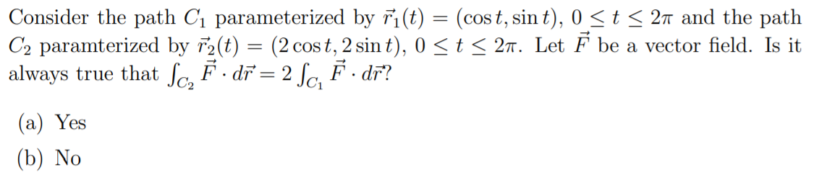
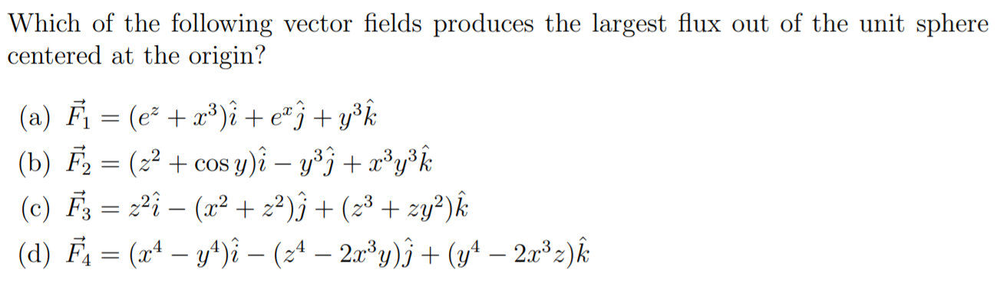

Final Exam Review
- Consider a mountain modeled by\(\displaystyle z = 50e^{-y^2} - x^4 + xy - y^2\) with postive \(x\) pointing east, positive \(y\) pointing north and \(z\) representing elevation.
True or False. If you are at point (2,0,34) and heading on a path directly northeast, then you are heading uphill. Justify your answer.
- Sketch a contour map of \(f(x,y) = 9 - (x-5)^2 - (y+3)^2\).
- Find and classify the critical points, if any, of \(f(x,y) = \frac{1}{3}x^3 + y^2 + 2xy - 6x -3y +4\).
- Write the integral \(\displaystyle \int_1^2 \int_0^x (x^2 + y^2)~dy~dx\) in polar coordinates.
- Set up integrals in rectangular and cylindrical coordinates that represent the volume of the region below the plane \(z=1\) and inside the paraboloid \(z = 4x^2 + 4y^2\).
- True or False. \(\displaystyle \vec{r} = <\sin t, \cos t, e^t >\) is a flowline of the vector field \(\displaystyle \vec{F} = < y, -x, z > \).
- Find the equation of the plane through the points P(1,1,1), Q(2,4,3), and R(-1,-2,-1).
- Find the equation of the tangent plane to \(z = \ln (2x + y)\) at (-1,3).
- 
- Consider using the transformation \(u = x - y\) and \(v= x+y\) to rewrite the integral \(\displaystyle \int \int_R \frac{1}{(x-y)^2}~dx~dy\)
where \(R\) is the trapezoid bounded by the lines \(x−y=2,x−y=4,x=0\) , and \( y=0\). What is the Jacobian?
- 
- Let \(D\) be the region bounded by \(y=1, y=x/2, \) and \(x=0\). Show \(\displaystyle \int \int_D x^2e^{xy}~dA = 2\).